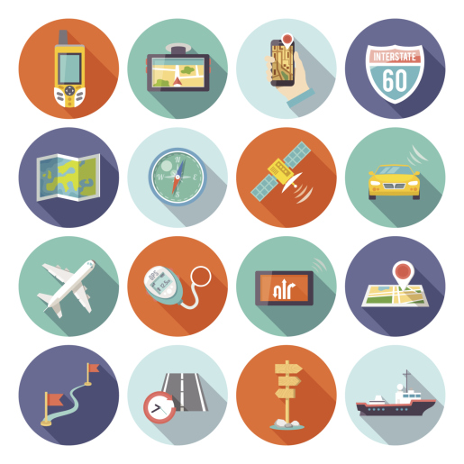
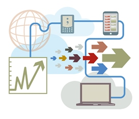
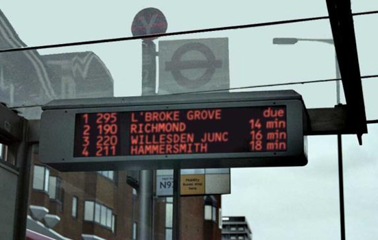
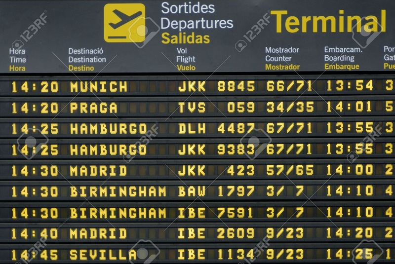
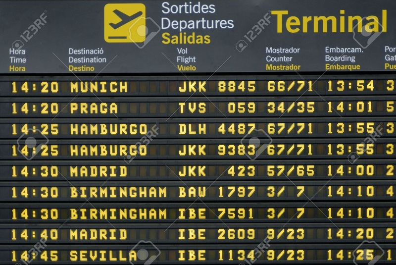

Real-time Information
Real-time Information is the information provided to the user needed at the time of requirement. For example, train time tables, maps required for navigation, match scores and flight timings or weather updates. This online service ensures that the user is aware of the events that are going to happen or are currently happening and allows them to plan their activities before hand, thereby making it more efficient.


(place cursor to zoom)
Though there are non-internet alternatives to this service, like being able to manually collect information by travelling around, people prefer this online service because of so many advantages that it has. The complete information which is segregated along with so many choices is provided to the user.

 

(place cursor to zoom)
The drawbacks of this online service are that information may not be the latest one. Updating may take a while and sometimes the user may misread the information. Moreover, users may occasionally be charged money in order to gain access to this service.